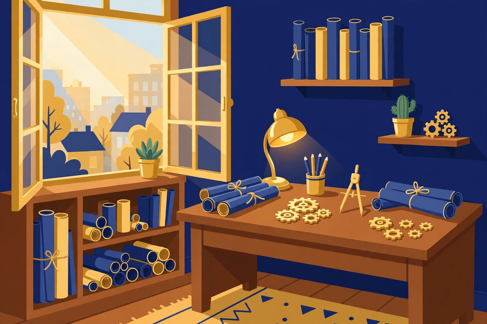

Welcome to the Drafting Room — blueprints on the desk, gears on the shelf, and every idea drawn in its proper place.
Meet Sammy the Spec Scroll, the mascot of this world.
The Signature Spec Catalog Pending Patents is the author’s own body of draft specifications — original specs, each marked Draft, ready to file. The archive holds 908,995 specs, each with a title, a category, and a source chunk.
Two working tools, right here on the page. Each one says what it does and what it cannot do. Neither tool reaches the live web, and neither one needs a key.
Enter a spec ID to check it is well formed and inside the archive (1 to 908,995).
Spec ID:
Enter a filing year to get the age of the spec in years, counted to 2026.
Year:
Designs, printables, and demos — free, downloadable, usable on the page. Every product is labeled Signature or Fun. Nothing here is for sale.
A printable drafting kit: a sheet of grid paper, a ruler guide, and a spec-outline worksheet.
Making: print the printable file, draw the spec outline in the boxes, and file the sheet by its category.
A poster of the drafting-room wall: blueprints, gears, and the brass lamp, drawn in the Drafting Room style.
Making: print the printable file and pin it up. The gears and sketches on it are drawings, not working parts.
A paper ornament: a rolled scroll with a ribbon, to stand on a desk.
Making: print the printable file on card, cut out the scroll, roll it, and tie the ribbon. No printer? Draw the scroll by hand from the measurements on the sheet.
Download all product lines as a printable (text)
Sammy the Spec Scroll once drafted a spec for a better pencil. The pencil was approved, filed, and then used to draft the next spec. (Fun — a made-up tale, not a record.)